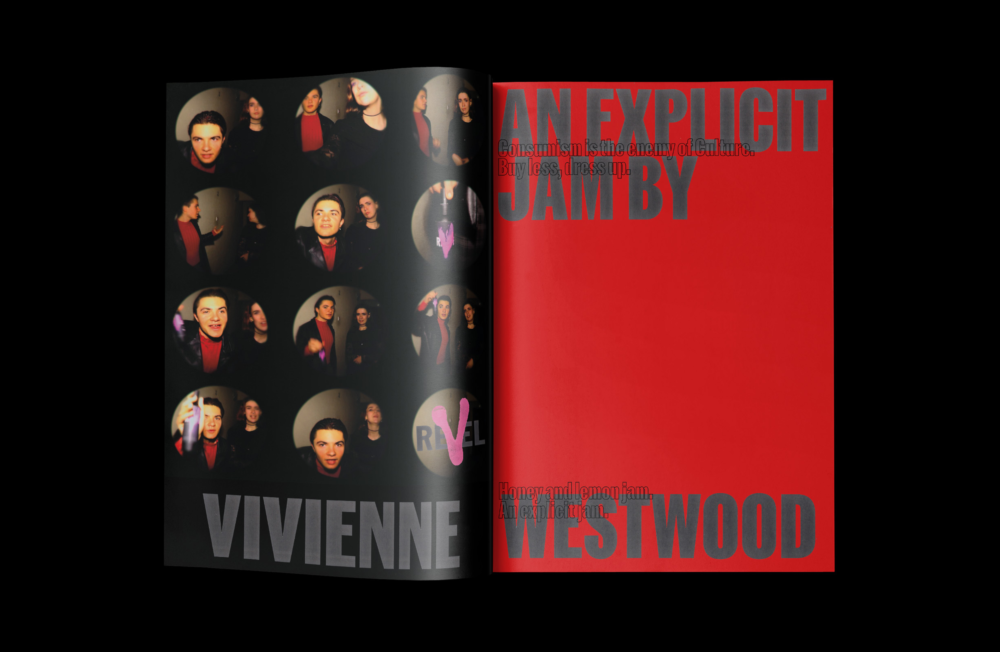
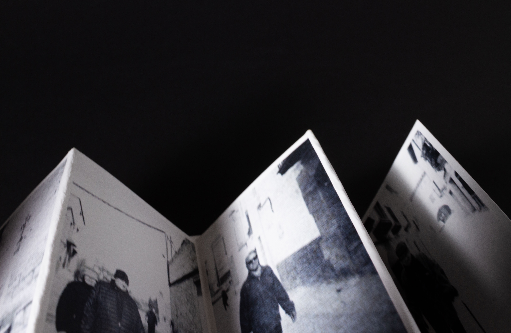

Maria Mur is a young Graphic Designer currently based in Bilbao, Spain.
Her work reflects a balance between innovation and heritage with a
hands-on approach.
Experience
Freelance graphic designer (2019-Act)
Graphic Designer and Art Director at Suvenir Bilbau (2022-2024)
Graphic Design Intern at Happyending Studio (2024)
Education
International Beccalaureate (2019-2020)
Graphic Design Degree at IED Kunsthal (2021-2025)*
Others
Young Talent Scholarship (IED)*
Stand Design at Milano Design Week (IED)
Speaker (Baskerville Design Festival)
Mention (Revista Gráffica)
Illustrator (Yorokobu)
Illustrator (SerifaLaris Festival)
Chromotype is an experimental typeface that originates from the
invisible structure found in the petal of a flower. Its chromo (color)
comes from the visible pigments (chromoplasts), and its type (shape)
is generated from the nectar guides used to direct pollinators. This
is what creates a typeface designed to experiment with volumes,
densities, and layers within a composition. It extends beyond the
character to a more complex system that can easily be used for
illustrative purposes.
(2) Mantón de baturra
2024
Illustration/New Media
This project reimagines the traditional artisanal process of making
the Aragonese mantón de baturra. Through 3D printing as a new method
of digital production, I propose its creation starting from the
graphic designer’s smallest unit: the pixel. The final result is a
mantón de baturra inspired by the traditional legends of San Miguel
from my grandparents’ village, Torrecilla de Alcañiz. The creative
process involves illustration and the 3D printing of 36 independent
PLA sheets, which are hand-joined using heat.
(3) Suvenir
2023
Editorial/Creative direction
Suvenir is a curated cultural magazine by Julia González Saiz and
Maria Mur. Its purpose is to bring new Bilbao artists to the spotlight
and give them a space to share thoughts and ideas freely.As curators
we interview, write, edit and design the issue to show to the young
public of the city, invigorating creation in Bilbao.
(4) Memoria de un olvido
2025
Art direction/Editorial
This project explores how two people, even when sharing the same
space, perceive and remember things differently. We take photographs
from our individual perspectives, capturing what each of us considers
meaningful in the moment. These images are then altered, highlighting
what our memories have retained and modifying what has been forgotten
or distorted. The resulting album reflects both viewpoints, revealing
how memory fragments and transforms, and how—even when based on a
shared, singular experience—it evolves in an individual way.

Revel
2024
Art/Photography direction
This is a fictional campaign shot for a fragrance made by the high
fashion brand Vivienne Westwood. The concept exploits the explicitness
and sourness the brand represents through a video shot at night with
high saturation and rithm through a frame by frame recording. Another
part of the campaign is the promotional short form video for social
media. With it a magazine add and a few campaign shots as well as two
posters.
Yorokobu
2024
Illustration
In collaboration between IED and Yorokobu this map illustrates my
favourite places in Bilbao. From traditional pastry shops to highly
known spaces I present this as the ultimate guide to the city. The map
was shared through Yorokobu's social media and online magazine and was
also printed as part of the design festival SerifaLaris 2024 as an
entry gift.

Terrabaixa
2024
Art/Photography direction
Terrabaixa is a personal photography project that tries to express the
feeling of a small village and its current context through
depopulation. It is a testimony of those that were and are and the
space that divides individuals in a small village dynamic.